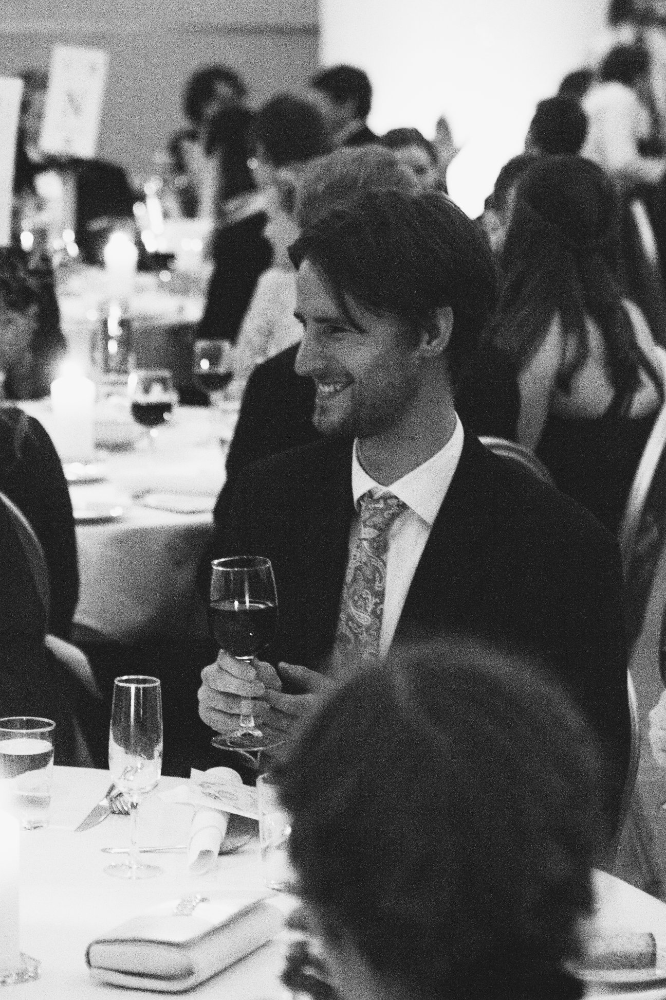
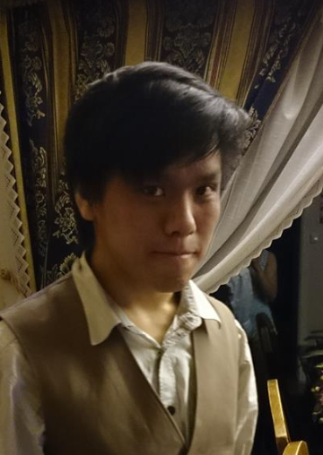

Projeck design
Amalie, Espen, Håkon, Tommy
9th October 2018
P4 Testing




Projeck design
Amalie, Espen, Håkon, Tommy
9th October 2018
Client: Hellmist Dragonfire
Website name: hellmistdragonfire.com
We have create a google form to go along with our testing procedure, and was sent out together to the subject of our testing. The google form will include questions that are applicable to all websites in general as well as specific to our website. All in all, the form was divided into 5 different part, where each part contributes to each type of questions. The first part asks the subject general information about themselves so that we have a clue of what kind of subject we have at hand. The second part asks the subject specific information to conclude if they are the right audience for our website, questions such as what type of music they listen to and their music purchasing habit. The third part will try to find out if a certain feature on a website is tolerable or desired by the subject. The fourth part will asks questions regarding the testing of our website such as compatibility, intelligibility and how likeable the website was. Finally, in the fifth part, we ask if there is anything else we haven’t brought up. By combining all the results we should get a pretty good picture of the test audience. link to google form!
Our page is aimed at a somewhat older demographic, and it is important that the bands old and loyal fans can navigate the page without frustration. However one of the goals of the page is to recruit a younger crowd. There were a challenge reaching the older demographics and for this survey this demographics is represented by our different families. This of course is an issue for the survey as our families has a somewhat higher education that our target demographics and also families can bee byes. As for the younger crowd that Hellmist dragonfire is trying to reach with this page we have been able to reach some in this target demographics. Of course we have to keep in mind that a lot of our subjects are students at NTNU. In the end we were able to reach 36 subjects in total. of them 28 were students and 8 were family members; 6 parents and 2 uncles.
Our page is mainly developed for PC but we have tested it on:
The feedback was positive there were some comments on the color scheme, and the navigation from tours.html to shop.html was a bit fast and you can be surprised by the link when you press it.
In a further development of this project we would have made sure the the link from tours to shop was better communicated in the user interface. When it comes to the color scheme we feel that it’s the band's decision however we would bring our concerns to the band to help them make an informed decision.